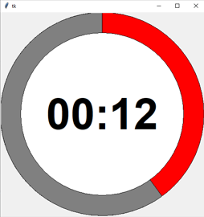

Python exercises: Canvas
Contents
Python exercises: Canvas¶
Exercise 1. Reproduce the pokeball¶
Reproduce the pokeball as explained during the video in today’s lessons.
from tkinter import *
window = Tk()
canvas = Canvas(window,height=500,width=500)
#canvas.create_line(0,0,500,500,fill="blue",width=5)
#canvas.create_line(0,500,500,0,fill="red",width=5)
#canvas.create_rectangle(50,50,250,250,fill="purple")
#points = [250,0,500,500,0,500]
#canvas.create_polygon(points,fill="yellow",outline="black",width=5)
#canvas.create_arc(0,0,500,500,style=PIESLICE,start=270,width=5)
canvas.create_arc(0,0,500,500,fill="red",extent=180,width=10)
canvas.create_arc(0,0,500,500,fill="white",extent=180,start=180,width=10)
canvas.create_oval(190,190,310,310,fill="white",width=10)
canvas.pack()
window.mainloop()
Exercise 2. Create a animated countdown timer¶
Adapt he pokeball in such a way that you create an animated countdown timer that counts from 30 to 0 seconds and shows a red arc that become smaller with time. 
Exercise 3. Advanced countdown timer¶
Ask the user how many seconds they want to wait and run the timer with this value. Check whether the value is not higher than fits in the display (59m:59s).
from tkinter import *
import time
window = Tk()
canvas = Canvas(window,height=500,width=500)
#canvas.create_arc(0,0,500,500,fill="white",extent=360,start=90,width=10)
canvas.create_oval(0,0,500,500,fill="red",width=1)
#canvas.create_arc(0,0,500,500,fill="white",extent=360,width=10)
canvas.create_oval(50,50,450,450,fill="white",width=1)
canvas.pack()
window.update()
for i in range(30+1):
#canvas = Canvas(window,height=500,width=500)
canvas.create_arc(0,0,500,500,fill="gray",start=90,extent=i*360/30,width=1)
canvas.create_oval(50,50,450,450,fill="white",width=1)
canvas.create_text(250, 250, text="00:"+str(30-i).zfill(2), fill="black", font=('Helvetica 80 bold'))
canvas.pack()
#canvas.create_arc(0,0,500,500,fill="red",start=360/30*i,width=10)
#canvas.create_arc(0,0,500,500,fill="red",extent=360,width=10)
#canvas.pack()
window.update()
time.sleep(1)
window.mainloop()
---------------------------------------------------------------------------
TclError Traceback (most recent call last)
Input In [69], in <cell line: 14>()
12 window.update()
14 for i in range(30+1):
15 #canvas = Canvas(window,height=500,width=500)
---> 16 canvas.create_arc(0,0,500,500,fill="gray",start=90,extent=i*360/30,width=1)
17 canvas.create_oval(50,50,450,450,fill="white",width=1)
18 canvas.create_text(250, 250, text="00:"+str(30-i).zfill(2), fill="black", font=('Helvetica 80 bold'))
File ~\Anaconda3\lib\tkinter\__init__.py:2782, in Canvas.create_arc(self, *args, **kw)
2780 def create_arc(self, *args, **kw):
2781 """Create arc shaped region with coordinates x1,y1,x2,y2."""
-> 2782 return self._create('arc', args, kw)
File ~\Anaconda3\lib\tkinter\__init__.py:2776, in Canvas._create(self, itemType, args, kw)
2774 else:
2775 cnf = {}
-> 2776 return self.tk.getint(self.tk.call(
2777 self._w, 'create', itemType,
2778 *(args + self._options(cnf, kw))))
TclError: invalid command name ".!canvas"